Chapter 7
Systems of Particles and Rotational Motion
Systems of Particles and Rotational Motion

7.1 Introduction
7.2 Centre of mass
7.3 Motion of centre of mass
7.4 Linear momentum of a system of particles
7.5 Vector product of two vectors
7.6 Angular velocity and its relation with linear velocity
7.7 Torque and angular momentum
7.8 Equilibrium of a rigid body
7.9 Moment of inertia
7.10 Theorems of perpendicular and parallel axes
7.11 Kinematics of rotational motion about a fixed axis
7.12 Dynamics of rotational motion about a fixed axis
7.13 Angular momentum in case of rotation about a fixed axis
7.14 Rolling motion
Summary
Points to Ponder
Exercises
Additional exercises
7.1 Introduction
In the earlier chapters we primarily considered the motion of a single particle. (A particle is represented as a point mass. It has practically no size.) We applied the results of our study even to the motion of bodies of finite size, assuming that motion of such bodies can be described in terms of the motion of a particle.
Any real body which we encounter in daily life has a finite size. In dealing with the motion of extended bodies (bodies of finite size) often the idealised model of a particle is inadequate. In this chapter we shall try to go beyond this inadequacy. We shall attempt to build an understanding of the motion of extended bodies. An extended body, in the first place, is a system of particles. We shall begin with the consideration of motion of the system as a whole. The centre of mass of a system of particles will be a key concept here. We shall discuss the motion of the centre of mass of a system of particles and usefulness of this concept in understanding the motion of extended bodies.
A large class of problems with extended bodies can be solved by considering them to be rigid bodies. Ideally a rigid body is a body with a perfectly definite and unchanging shape. The distances between all pairs of particles of such a body do not change. It is evident from this definition of a rigid body that no real body is truly rigid, since real bodies deform under the influence of forces. But in many situations the deformations are negligible. In a number of situations involving bodies such as wheels, tops, steel beams, molecules and planets on the other hand, we can ignore that they warp, bend or vibrate and treat them as rigid.
7.1.1 What kind of motion can a rigid body have?
Let us try to explore this question by taking some examples of the motion of rigid bodies. Let us begin with a rectangular block sliding down an inclined plane without any sidewise movement. The block is a rigid body. Its motion down the plane is such that all the particles of the body are moving together, i.e. they have the same velocity at any instant of time. The rigid body here is in pure translational motion (Fig. 7.1).

In pure translational motion at any instant of time all particles of the body have the same velocity.
Consider now the rolling motion of a solid metallic or wooden cylinder down the same inclined plane (Fig. 7.2). The rigid body in this problem, namely the cylinder, shifts from the top to the bottom of the inclined plane, and thus, has translational motion. But as Fig. 7.2 shows, all its particles are not moving with the same velocity at any instant. The body therefore, is not in pure translation. Its motion is translation plus ‘something else.’
In order to understand what this ‘something else’ is, let us take a rigid body so constrained that it cannot have translational motion. The most common way to constrain a rigid body so that it does not have translational motion is to fix it along a straight line. The only possible motion of such a rigid body is rotation. The line along which the body is fixed is termed as its axis of rotation. If you look around, you will come across many examples of rotation about an axis, a ceiling fan, a potter’s wheel, a giant wheel in a fair, a merry-go-round and so on (Fig 7.3(a) and (b)).
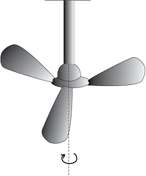
(a)
(b)
Fig. 7.3 Rotation about a fixed axis
(a) A ceiling fan
(b) A potter’s wheel.
Let us try to understand what rotation is, what characterises rotation. You may notice that in rotation of a rigid body about a fixed axis, every particle of the body moves in a circle, which lies in a plane perpendicular to the axis and has its centre on the axis.
Fig. 7.4 shows the rotational motion of a rigid body about a fixed axis (the z-axis of the frame of reference). Let P1 be a particle of the rigid body, arbitrarily chosen and at a distance r1 from fixed axis. The particle P1 describes a circle of radius r1 with its centre C1 on the fixed axis. The circle lies in a plane perpendicular to the axis. The figure also shows another particle P2 of the rigid body, P2 is at a distance r2 from the fixed axis. The particle P2 moves in a circle of radius r2 and with centre C2 on the axis. This circle, too, lies in a plane perpendicular to the axis. Note that the circles described by P1 and P2 may lie in different planes; both these planes, however, are perpendicular to the fixed axis. For any particle on the axis like P3, r = 0. Any such particle remains stationary while the body rotates. This is expected since the axis is fixed.
Fig. 7.5 (a) A spinning top
(The point of contact of the top with the ground, its tip O, is fixed.)
Fig. 7.5 (b) An oscillating table fan. The pivot of the fan, point O, is fixed.
In some examples of rotation, however, the axis may not be fixed. A prominent example of this kind of rotation is a top spinning in place [Fig. 7.5(a)]. (We assume that the top does not slip from place to place and so does not have translational motion.) We know from experience that the axis of such a spinning top moves around the vertical through its point of contact with the ground, sweeping out a cone as shown in Fig. 7.5(a). (This movement of the axis of the top around the vertical is termed precession.) Note, the point of contact of the top with ground is fixed. The axis of rotation of the top at any instant passes through the point of contact. Another simple example of this kind of rotation is the oscillating table fan or a pedestal fan. You may have observed that the axis of rotation of such a fan has an oscillating (sidewise) movement in a horizontal plane about the vertical through the point at which the axis is pivoted (point O in Fig. 7.5(b)).
While the fan rotates and its axis moves sidewise, this point is fixed. Thus, in more general cases of rotation, such as the rotation of a top or a pedestal fan, one point and not one line, of the rigid body is fixed. In this case the axis is not fixed, though it always passes through the fixed point. In our study, however, we mostly deal with the simpler and special case of rotation in which one line (i.e. the axis) is fixed.
Fig. 7.6(a) Motion of a rigid body which is pure translation.
Fig. 7.6(b) Motion of a rigid body which is a combination of translation and
rotation.
Fig 7.6 (a) and 7.6 (b) illustrate different motions of the same body. Note P is an arbitrary point of the body; O is the centre of mass of the body, which is defined in the next section. Suffice to say here that the trajectories of O are the translational trajectories Tr1 and Tr2 of the body. The positions O and P at three different instants of time are shown by O1, O2, and O3, and P1, P2 and P3, respectively, in both Figs. 7.6 (a) and (b) . As seen from Fig. 7.6(a), at any instant the velocities of any particles like O and P of the body are the same in pure translation. Notice, in this case the orientation of OP, i.e. the angle OP makes with a fixed direction, say the horizontal, remains the same, i.e. α1 = α2 = α3. Fig. 7.6 (b) illustrates a case of combination of translation and rotation. In this case, at any instants the velocities of O and P differ. Also, α1, α2 and α3 may all be different.
Thus, for us rotation will be about a fixed axis only unless stated otherwise.
The rolling motion of a cylinder down an inclined plane is a combination of rotation about a fixed axis and translation. Thus, the ‘something else’ in the case of rolling motion which we referred to earlier is rotational motion. You will find Fig. 7.6(a) and (b) instructive from this point of view. Both these figures show motion of the same body along identical translational trajectory. In one case, Fig. 7.6(a), the motion is a pure translation; in the other case [Fig. 7.6(b)] it is a combination of translation and rotation. (You may try to reproduce the two types of motion shown using a rigid object like a heavy book.)
We now recapitulate the most important observations of the present section: The motion of a rigid body which is not pivoted or fixed in some way is either a pure translation or a combination of translation and rotation. The motion of a rigid body which is pivoted or fixed in some way is rotation. The rotation may be about an axis that is fixed (e.g. a ceiling fan) or moving (e.g. an oscillating table fan). We shall, in the present chapter, consider rotational motion about a fixed axis only.
7.2 Centre of Mass
We shall first see what the centre of mass of a system of particles is and then discuss its significance. For simplicity we shall start with a two particle system. We shall take the line joining the two particles to be the x- axis.

Fig. 7.7
Let the distances of the two particles be x1 and x2 respectively from some origin O. Let m1 and m2 be respectively the masses of the two particles. The centre of mass of the system is that point C which is at a distance X from O, where X is given by
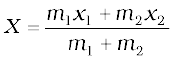 (7.1)
In Eq. (7.1), X can be regarded as the mass-weighted mean of x1 and x2. If the two particles have the same mass m1 = m2 = m, then
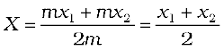
Thus, for two particles of equal mass the centre of mass lies exactly midway between them.
If we have n particles of masses m1, m2, ...mn respectively, along a straight line taken as the x- axis, then by definition the position of the centre of the mass of the system of particles is given by
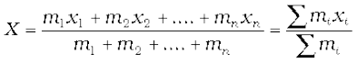 (7.2)
where x1, x2,...xn are the distances of the particles from the origin; X is also measured from the same origin. The symbol 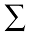(the Greek letter sigma) denotes summation, in this case over n particles. The sum
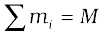
is the total mass of the system.
Suppose that we have three particles, not lying in a straight line. We may define x and y-axes in the plane in which the particles lie and represent the positions of the three particles by coordinates (x1,y1), (x2,y2) and (x3,y3) respectively. Let the masses of the three particles be m1, m2 and m3 respectively. The centre of mass C of the system of the three particles is defined and located by the coordinates (X, Y) given by
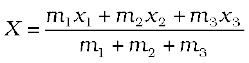 (7.3a)
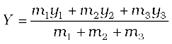 (7.3b)
For the particles of equal mass m = m1 = m2 = m3,
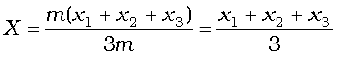
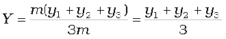
Thus, for three particles of equal mass, the centre of mass coincides with the centroid of the triangle formed by the particles.
Results of Eqs. (7.3a) and (7.3b) are generalised easily to a system of n particles, not necessarily lying in a plane, but distributed in space. The centre of mass of such a system is at (X, Y, Z ), where
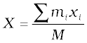 (7.4a)
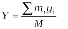 (7.4b)
and 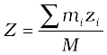 (7.4c)
Here M = 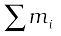is the total mass of the system. The index i runs from 1 to n; mi is the mass of the ith particle and the position of the ith particle is given by (xi, yi, zi).
Eqs. (7.4a), (7.4b) and (7.4c) can be combined into one equation using the notation of position vectors. Let 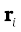 be the position vector of the ith particle and R be the position vector of the centre of mass:
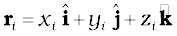
and 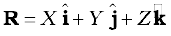
Then 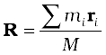 (7.4d)
The sum on the right hand side is a vector sum.
Note the economy of expressions we achieve by use of vectors. If the origin of the frame of reference (the coordinate system) is chosen to be the centre of mass then 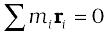for the given system of particles.
A rigid body, such as a metre stick or a flywheel, is a system of closely packed particles; Eqs. (7.4a), (7.4b), (7.4c) and (7.4d) are therefore, applicable to a rigid body. The number of particles (atoms or molecules) in such a body is so large that it is impossible to carry out the summations over individual particles in these equations. Since the spacing of the particles is small, we can treat the body as a continuous distribution of mass. We subdivide the body into n small elements of mass; ∆m1, ∆m2... ∆mn; the ith element ∆mi is taken to be located about the point (xi, yi, zi). The coordinates of the centre of mass are then approximately given by
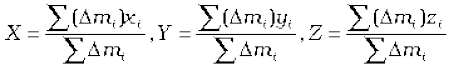
As we make n bigger and bigger and each ∆mi smaller and smaller, these expressions become exact. In that case, we denote the sums over i by integrals. Thus,
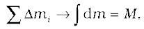
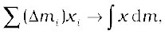

and 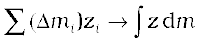
Here M is the total mass of the body. The coordinates of the centre of mass now are
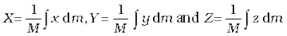 (7.5a)
The vector expression equivalent to these three scalar expressions is
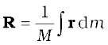 (7.5b)
If we choose, the centre of mass as the origin of our coordinate system,
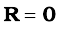
i.e.,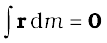
or 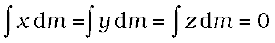 (7.6)
Often we have to calculate the centre of mass of homogeneous bodies of regular shapes like rings, discs, spheres, rods etc. (By a homogeneous body we mean a body with uniformly distributed mass.) By using symmetry consideration, we can easily show that the centres of mass of these bodies lie at their geometric centres.

Let us consider a thin rod, whose width and breath (in case the cross section of the rod is rectangular) or radius (in case the cross section of the rod is cylindrical) is much smaller than its length. Taking the origin to be at the geometric centre of the rod and x-axis to be along the length of the rod, we can say that on account of reflection symmetry, for every element dm of the rod at x, there is an element of the same mass dm located at –x (Fig. 7.8).
The net contribution of every such pair to the integral and hence the integral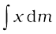 itself is zero. From Eq. (7.6), the point for which the integral itself is zero, is the centre of mass. Thus, the centre of mass of a homogenous thin rod coincides with its geometric centre. This can be understood on the basis of reflection symmetry.
The same symmetry argument will apply to homogeneous rings, discs, spheres, or even thick rods of circular or rectangular cross section. For all such bodies you will realise that for every element dm at a point (x, y, z) one can always take an element of the same mass at the point (–x, –y, –z). (In other words, the origin is a point of reflection symmetry for these bodies.) As a result, the integrals in Eq. (7.5 a) all are zero. This means that for all the above bodies, their centre of mass coincides with their geometric centre.
Example 7.1 Find the centre of mass of three particles at the vertices of an equilateral triangle. The masses of the particles are 100g, 150g, and 200g respectively. Each side of the equilateral triangle is 0.5m long.
Answer
Fig. 7.9
With the X and Y axes chosen as shown in Fig. 7.9, the coordinates of points O, A and B forming the equilateral triangle are respectively (0,0), (0.5,0), (0.25,0.25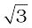). Let the masses 100 g, 150g and 200g be located at O, A and B be respectively. Then,

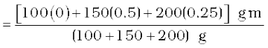
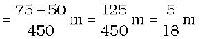

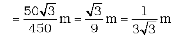
The centre of mass C is shown in the figure. Note that it is not the geometric centre of the triangle OAB. Why?
Example 7.2 Find the centre of mass of a triangular lamina.
Answer The lamina (∆LMN) may be subdivided into narrow strips each parallel to the base (MN) as shown in Fig. 7.10

Fig. 7.10
By symmetry each strip has its centre of mass at its midpoint. If we join the midpoint of all the strips we get the median LP. The centre of mass of the triangle as a whole therefore, has to lie on the median LP. Similarly, we can argue that it lies on the median MQ and NR. This means the centre of mass lies on the point of concurrence of the medians, i.e. on the centroid G of the triangle.
Example 7.3 Find the centre of mass of a uniform L-shaped lamina (a thin flat plate) with dimensions as shown. The mass of the lamina is 3 kg.
Answer Choosing the X and Y axes as shown in Fig. 7.11 we have the coordinates of the vertices of the L-shaped lamina as given in the figure. We can think of the
L-shape to consist of 3 squares each of length 1m. The mass of each square is 1kg, since the lamina is uniform. The centres of mass C1, C2 and C3 of the squares are, by symmetry, their geometric centres and have coordinates (1/2,1/2), (3/2,1/2), (1/2,3/2) respectively. We take the masses of the squares to be concentrated at these points. The centre of mass of the whole
L shape (X, Y) is the centre of mass of these mass points.
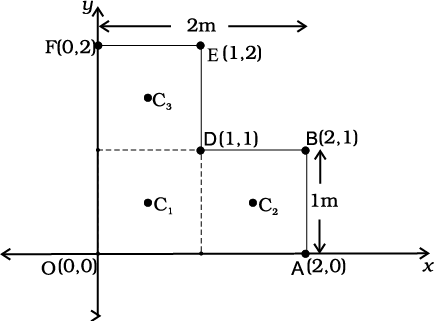
Fig. 7.11
Hence
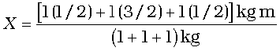 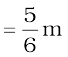
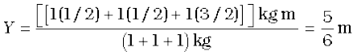
The centre of mass of the L-shape lies on the line OD. We could have guessed this without calculations. Can you tell why? Suppose, the three squares that make up the L shaped lamina of Fig. 7.11 had different masses. How will you then determine the centre of mass of the lamina?
7.3 Motion of Centre of Mass
Equipped with the definition of the centre of mass, we are now in a position to discuss its physical importance for a system of particles. We may rewrite Eq.(7.4d) as
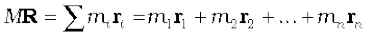 (7.7)
Differentiating the two sides of the equation with respect to time we get
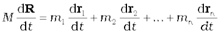
or
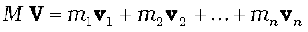 (7.8)
where 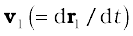 is the velocity of the first particle 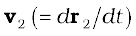is the velocity of the second particle etc. and is the velocity of the centre of mass. Note that we assumed the masses m1, m2, ... etc. do not change in time. We have therefore, treated them as constants in differentiating the equations with respect to time.
Differentiating Eq.(7.8) with respect to time, we obtain
or
(7.9)
where is the acceleration of the first particle, is the acceleration of the second particle etc. and is the acceleration of the centre of mass of the system of particles.
Now, from Newton’s second law, the force acting on the first particle is given by . The force acting on the second particle is given by and so on. Eq. (7.9) may be written as
(7.10)
Thus, the total mass of a system of particles times the acceleration of its centre of mass is the vector sum of all the forces acting on the system of particles.
Note when we talk of the force on the first particle, it is not a single force, but the vector sum of all the forces on the first particle; likewise for the second particle etc. Among these forces on each particle there will be external forces exerted by bodies outside the system and also internal forces exerted by the particles on one another. We know from Newton’s third law that these internal forces occur in equal and opposite pairs and in the sum of forces of Eq. (7.10), their contribution is zero. Only the external forces contribute to the equation. We can then rewrite Eq. (7.10) as
(7.11)
where  represents the sum of all external forces acting on the particles of the system.
represents the sum of all external forces acting on the particles of the system.
Eq. (7.11) states that the centre of mass of a system of particles moves as if all the mass of the system was concentrated at the centre of mass and all the external forces were applied at that point.
Notice, to determine the motion of the centre of mass no knowledge of internal forces of the system of particles is required; for this purpose we need to know only the external forces.
To obtain Eq. (7.11) we did not need to specify the nature of the system of particles. The system may be a collection of particles in which there may be all kinds of internal motions, or it may be a rigid body which has either pure translational motion or a combination of translational and rotational motion. Whatever is the system and the motion of its individual particles, the centre of mass moves according to Eq. (7.11).
Instead of treating extended bodies as single particles as we have done in earlier chapters, we can now treat them as systems of particles. We can obtain the translational component of their motion, i.e. the motion centre of mass of the system, by taking the mass of the whole system to be concentrated at the centre of mass and all the external forces on the system to be acting at the centre of mass.
This is the procedure that we followed earlier in analysing forces on bodies and solving problems without explicitly outlining and justifying the procedure. We now realise that in earlier studies we assumed, without saying so, that rotational motion and/or internal motion of the particles were either absent or negligible. We no longer need to do this. We have not only found the justification of the procedure we followed earlier; but we also have found how to describe and separate the translational motion of (1) a rigid body which may be rotating as well, or (2) a system of particles with all kinds of internal motion.
Fig. 7.12 The centre of mass of the fragments of the projectile continues along the same parabolic path which it would have followed if there were no explosion.
Figure 7.12 is a good illustration of Eq. (7.11). A projectile, following the usual parabolic trajectory, explodes into fragments midway in air. The forces leading to the explosion are internal forces. They contribute nothing to the motion of the centre of mass. The total external force, namely, the force of gravity acting on the body, is the same before and after the explosion. The centre of mass under the influence of the external force continues, therefore, along the same parabolic trajectory as it would have followed if there were no explosion.
7.4 Linear Momentum of a system of Particles
Let us recall that the linear momentum of a particle is defined as
(7.12)
Let us also recall that Newton’s second law written in symbolic form for a single particle is
(7.13)
where F is the force on the particle. Let us consider a system of n particles with masses m1, m2,...mn respectively and velocities respectively. The particles may be interacting and have external forces acting on them. The linear momentum of the first particle is , of the second particle is and so on.
For the system of n particles, the linear momentum of the system is defined to be the vector sum of all individual particles of the system,
(7.14)
Comparing this with Eq. (7.8)
(7.15)
Thus, the total momentum of a system of particles is equal to the product of the total mass of the system and the velocity of its centre of mass. Differentiating Eq. (7.15) with respect to time,
(7.16)
Comparing Eq.(7.16) and Eq. (7.11),
 (7.17)
(7.17)
This is the statement of Newton’s second law extended to a system of particles.
Suppose now, that the sum of external forces acting on a system of particles is zero. Then from Eq.(7.17)
= Constant (7.18a)
Thus, when the total external force acting on a system of particles is zero, the total linear momentum of the system is constant. This is the law of conservation of the total linear momentum of a system of particles. Because of Eq. (7.15), this also means that when the
total external force on the system is zero
the velocity of the centre of mass remains constant. (We assume throughout the discussion on systems of particles in this chapter that the total mass of the system remains constant.)
Note that on account of the internal forces, i.e. the forces exerted by the particles on one another, the individual particles may have complicated trajectories. Yet, if the total external force acting on the system is zero, the centre of mass moves with a constant velocity, i.e., moves uniformly in a straight line like a free particle.
The vector Eq. (7.18a) is equivalent to three scalar equations,
Px = c1, Py = c2 and Pz = c3 (7.18 b)
Here Px, Py and Pz are the components of the total linear momentum vector P along the x, y and z axes respectively; c1, c2 and c3 are constants.
(a) (b)
Fig. 7.13 (a) A heavy nucleus (Ra) splits into a lighter nucleus (Rn) and an alpha particle (He). The CM of the system is in uniform motion.
(b) The same spliting of the heavy nucleus (Ra) with the centre of mass at rest. The two product particles fly back to back.
As an example, let us consider the radioactive decay of a moving unstable particle, like the nucleus of radium. A radium nucleus disintegrates into a nucleus of radon and an alpha particle. The forces leading to the decay are internal to the system and the external forces on the system are negligible. So the total linear momentum of the system is the same before and after decay. The two particles produced in the decay, the radon nucleus and the alpha particle, move in different directions in such a way that their centre of mass moves along the same path along which the original decaying radium nucleus was moving [Fig. 7.13(a)].
If we observe the decay from the frame of reference in which the centre of mass is at rest, the motion of the particles involved in the decay looks particularly simple; the product particles move back to back with their centre of mass remaining at rest as shown in Fig.7.13 (b).
Fig. 7.14 (a) Trajectories of two stars, S1 (dotted line) and S2 (solid line) forming a binary system with their centre of mass C in uniform motion.
(b) The same binary system, with the centre of mass C at rest.
In many problems on the system of particles as in the above radioactive decay problem, it is convenient to work in the centre of mass frame rather than in the laboratory frame of reference.
In astronomy, binary (double) stars is a common occurrence. If there are no external forces, the centre of mass of a double star moves like a free particle, as shown in Fig.7.14 (a). The trajectories of the two stars of equal mass are also shown in the figure; they look complicated. If we go to the centre of mass frame, then we find that there the two stars are moving in a circle, about the centre of mass, which is at rest. Note that the position of the stars have to be diametrically opposite to each other [Fig. 7.14(b)]. Thus in our frame of reference, the trajectories of the stars are a combination of (i) uniform motion in a straight line of the centre of mass and (ii) circular orbits of the stars about the centre of mass.
As can be seen from the two examples, separating the motion of different parts of a system into motion of the centre of mass and motion about the centre of mass is a very useful technique that helps in understanding the motion of the system.
7.5 Vector Product of Two Vectors
We are already familiar with vectors and their use in physics. In chapter 6 (Work, Energy, Power) we defined the scalar product of two vectors. An important physical quantity, work, is defined as a scalar product of two vector quantities, force and displacement.
We shall now define another product of two vectors. This product is a vector. Two important quantities in the study of rotational motion, namely, moment of a force and angular momentum, are defined as vector products.
Definition of Vector Product
A vector product of two vectors a and b is a vector c such that
(i) magnitude of c = c where a and b are magnitudes of a and b and θ is the angle between the two vectors.
(ii) c is perpendicular to the plane containing a and b.
(iii) if we take a right handed screw with its head lying in the plane of a and b and the screw perpendicular to this plane, and if we turn the head in the direction from a to b, then the tip of the screw advances in the direction of c. This right handed screw rule is illustrated in Fig. 7.15a.
Alternately, if one curls up the fingers of right hand around a line perpendicular to the plane of the vectors a and b and if the fingers are curled up in the direction from a to b, then the stretched thumb points in the direction of c, as shown in Fig. 7.15b.
(a) (b)
Fig. 7.15 (a) Rule of the right handed screw for defining the direction of the vector product of two vectors.
(b) Rule of the right hand for defining the direction of the vector product.
A simpler version of the right hand rule is the following : Open up your right hand palm and curl the fingers pointing from a to b. Your stretched thumb points in the direction of c.
It should be remembered that there are two angles between any two vectors a and b . In Fig. 7.15 (a) or (b) they correspond to θ (as shown) and (3600– θ). While applying either of the above rules, the rotation should be taken through the smaller angle (<1800) between a and b. It is θ here.
Because of the cross used to denote the vector product, it is also referred to as cross product.
• Note that scalar product of two vectors is commutative as said earlier, a.b = b.a
The vector product, however, is not commutative, i.e. a × b ≠ b × a
The magnitude of both a × b and b × a is the same (); also, both of them are perpendicular to the plane of a and b. But the rotation of the right-handed screw in case of
a × b is from a to b, whereas in case of b × a it is from b to a. This means the two vectors are in opposite directions. We have
• Another interesting property of a vector product is its behaviour under reflection. Under reflection (i.e. on taking the mirror image) we have . As a result all the components of a vector change sign and thus . What happens to a × b under reflection?
a × b
Thus, a × b does not change sign under reflection.
• Both scalar and vector products are distributive with respect to vector addition.
Thus,

• We may write c = a × b in the component form. For this we first need to obtain some elementary cross products:
(i) a × a = 0 (0 is a null vector, i.e. a vector with zero magnitude)
This follows since magnitude of a × a is .
From this follow the results
(ii) 
Note that the magnitude of is sin900 or 1, since  and both have unit magnitude and the angle between them is 900. Thus,
and both have unit magnitude and the angle between them is 900. Thus,  is a unit vector. A unit vector perpendicular to the plane of
is a unit vector. A unit vector perpendicular to the plane of  and
and  and related to them by the right hand screw rule is
and related to them by the right hand screw rule is  . Hence, the above result. You may verify similarly,
. Hence, the above result. You may verify similarly,
From the rule for commutation of the cross product, it follows:
Note if  occur cyclically in the above vector product relation, the vector product is positive. If do not occur in cyclic order, the vector product is negative.
occur cyclically in the above vector product relation, the vector product is positive. If do not occur in cyclic order, the vector product is negative.
Now,
We have used the elementary cross products in obtaining the above relation. The expression for a × b can be put in a determinant form which is easy to remember.
Example 7.4 Find the scalar and vector products of two vectors. a = (3iˆ – 4jˆ + 5kˆ ) and b = (– 2iˆ + jˆ – 3kˆ )
Answer
Note
7.6 Angular velocity and its Relation with Linear velocity
In this section we shall study what is angular velocity and its role in rotational motion. We have seen that every particle of a rotating body moves in a circle. The linear velocity of the particle is related to the angular velocity. The relation between these two quantities involves a vector product which we learnt about in the last section.

Let us go back to Fig. 7.4. As said above, in rotational motion of a rigid body about a fixed axis, every particle of the body moves in a circle, which lies in a plane perpendicular to the axis and has its centre on the axis. In Fig. 7.16 we redraw Fig. 7.4, showing a typical particle (at a point P) of the rigid body rotating about a fixed axis (taken as the z-axis). The particle describes a circle with a centre C on the axis. The radius of the circle is r, the perpendicular distance of the point P from the axis. We also show the linear velocity vectorv of the particle at P. It is along the tangent at P to the circle.
Let P′ be the position of the particle after an interval of time ∆t (Fig. 7.16). The angle PCP′ describes the angular displacement ∆θ of the particle in time∆t. The average angular velocity of the particle over the interval ∆t is ∆θ/∆t.As ∆t tends to zero (i.e. takes smaller and smaller values), the ratio ∆θ/∆tapproaches a limit which is the instantaneous angular velocity dθ/dt of the particle at the position P. We denote the instantaneous angular velocity by ω(the Greek letter omega). We know from our study of circular motion that the magnitude of linear velocity v of a particle moving in a circle is related to the angular velocity of the particle ω by the simple relation  , where r is the radius of the circle.
, where r is the radius of the circle.
We observe that at any given instant the relation applies to all particles of the rigid body. Thus for a particle at a perpendicular distance rifrom the fixed axis, the linear velocity at a given instant vi is given by
(7.19)
The index i runs from 1 to n, where n is the total number of particles of the body.
For particles on the axis, , and hence v = ω r = 0. Thus, particles on the axis are stationary. This verifies that the axis is fixed.
Note that we use the same angular velocity ω for all the particles. We therefore, refer to ω as the angular velocity of the whole body.
We have characterised pure translation of a body by all parts of the body having the same velocity at any instant of time. Similarly, we may characterise pure rotation by all parts of the body having the same angular velocity at any instant of time. Note that this characterisation of the rotation of a rigid body about a fixed axis is just another way of saying as in Sec. 7.1 that each particle of the body moves in a circle, which lies in a plane perpendicular to the axis and has the centre on the axis.
In our discussion so far the angular velocity appears to be a scalar. In fact, it is a vector. We shall not justify this fact, but we shall accept it. For rotation about a fixed axis, the angular velocity vector lies along the axis of rotation, and points out in the direction in which a right handed screw would advance, if the head of the screw is rotated with the body. (See Fig. 7.17a).
The magnitude of this vector is referred as above.
Fig. 7.17 (a) If the head of a right handed screw rotates with the body, the screw advances in the direction of the angular velocity ω. If the sense (clockwise or anticlockwise) of rotation of the body changes, so does the direction of ω.
We shall now look at what the vector product ω × r corresponds to. Refer to Fig. 7.17(b) which is a part of Fig. 7.16 reproduced to show the path of the particle P. The figure shows the vector ω directed along the fixed (z–) axis and also the position vector r = of the particle at P of the rigid body with respect to the origin O. Note that the origin is chosen to be on the axis of rotation.
Now
But
Hence
The vector is perpendicular to ω, i.e. to the z-axis and also to CP, the radius of the circle described by the particle at P. It is therefore, along the tangent to the circle at P. Also, the magnitude of ω × CP is ω (CP) since
ω and CP are perpendicular to each other. We shall denote CP by and not by r, as we did earlier.
Thus, ω × r is a vector of magnitude ω and is along the tangent to the circle described by the particle at P. The linear velocity vector v at P has the same magnitude and direction. Thus,
(7.20)
In fact, the relation, Eq. (7.20), holds good even for rotation of a rigid body with one point fixed, such as the rotation of the top [Fig. 7.6(a)]. In this case r represents the position vector of the particle with respect to the fixed point taken as the origin.
We note that for rotation about a fixed axis, the direction of the vector ω does not change with time. Its magnitude may, however, change from instant to instant. For the more general rotation, both the magnitude and the direction of ω may change from instant to instant.
7.6.1 Angular acceleration
You may have noticed that we are developing the study of rotational motion along the lines of the study of translational motion with which we are already familiar. Analogous to the kinetic variables of linear displacement and velocity (v) in translational motion, we have angular displacement and angular velocity (ω) in rotational motion. It is then natural to define in rotational motion the concept of angular acceleration in analogy with linear acceleration defined as the time rate of change of velocity in translational motion. We define angular acceleration α as the time rate of change of angular velocity; Thus,
(7.21)
If the axis of rotation is fixed, the direction of ω and hence, that of α is fixed. In this case the vector equation reduces to a scalar equation
(7.22)
7.7 Torque and Angular Momentum
In this section, we shall acquaint ourselves with two physical quantities which are defined as vector products of two vectors. These as we shall see, are especially important in the discussion of motion of systems of particles, particularly rigid bodies.
7.7.1 Moment of force (Torque)
We have learnt that the motion of a rigid body in general is a combination of rotation and translation. If the body is fixed at a point or along a line, it has only rotational motion. We know that force is needed to change the translational state of a body, i.e. to produce linear acceleration. We may then ask, what is the analogue of force in the case of rotational motion? To look into the question in a concrete situation let us take the example of opening or closing of a door. A door is a rigid body which can rotate about a fixed vertical axis passing through the hinges. What makes the door rotate? It is clear that unless a force is applied the door does not rotate. But any force does not do the job. A force applied to the hinge line cannot produce any rotation at all, whereas a force of given magnitude applied at right angles to the door at its outer edge is most effective in producing rotation. It is not the force alone, but how and where the force is applied is important in rotational motion.
The rotational analogue of force is moment of force. It is also referred to as torque or couple. (We shall use the words moment of force and torque interchangeably.) We shall first define the moment of force for the special case of a single particle. Later on we shall extend the concept to systems of particles including rigid bodies. We shall also relate it to a change in the state of rotational motion, i.e. is angular acceleration of a rigid body.

Fig. 7.18 , τ is perpendicular to the plane containing r and F, and its direction is given by the right handed screw rule.
If a force acts on a single particle at a point P whose position with respect to the origin O is given by the position vector r (Fig. 7.18), the moment of the force acting on the particle with respect to the origin O is defined as the vector product
τ = r × F (7.23)
The moment of force (or torque) is a vector quantity. The symbol τ stands for the Greek letter tau. The magnitude of τ is
τ = r F sinθ (7.24a)
where r is the magnitude of the position vector r, i.e. the length OP, F is the magnitude of force F and θ is the angle between r and F as
shown.
Moment of force has dimensions M L2 T -2. Its dimensions are the same as those of work or energy. It is, however, a very different physical quantity than work. Moment of a force is a vector, while work is a scalar. The SI unit of moment of force is newton metre (N m). The magnitude of the moment of force may be written
(7.24b)
or (7.24c)
where  = r sinθ is the perpendicular distance of the line of action of F form the origin and is the component of F in the direction perpendicular to r. Note that τ = 0 if
= r sinθ is the perpendicular distance of the line of action of F form the origin and is the component of F in the direction perpendicular to r. Note that τ = 0 if
r = 0, F = 0 or θ = 00 or 1800 . Thus, the moment of a force vanishes if either the magnitude of the force is zero, or if the line of action of the force passes through the origin.
One may note that since r × F is a vector product, properties of a vector product of two vectors apply to it. If the direction of F is reversed, the direction of the moment of force is reversed. If directions of both r and F are reversed, the direction of the moment of force remains the same.
7.7.2 Angular momentum of a particle
Just as the moment of a force is the rotational analogue of force, the quantity angular momentum is the rotational analogue of linear momentum. We shall first define angular momentum for the special case of a single particle and look at its usefulness in the context of single particle motion. We shall then extend the definition of angular momentum to systems of particles including rigid bodies.
Like moment of a force, angular momentum is also a vector product. It could also be referred to as moment of (linear) momentum. From this term one could guess how angular momentum is defined.
Consider a particle of mass m and linear momentum p at a position r relative to the origin O. The angular momentum l of the particle with respect to the origin O is defined to be
l = r × p (7.25a)
The magnitude of the angular momentum vector is
(7.26a)
where p is the magnitude of p and θ is the angle between r and p. We may write
or (7.26b)
where (= r sinθ) is the perpendicular distance of the directional line of p from the origin and is the component of p in a direction perpendicular to r. We expect the angular momentum to be zero (l = 0), if the linear momentum vanishes (p = 0), if the particle is at the origin (r = 0), or if the directional line of p passes through the origin θ = 00 or 1800.
The physical quantities, moment of a force and angular momentum, have an important relation between them. It is the rotational analogue of the relation between force and linear momentum. For deriving the relation in the context of a single particle, we differentiate l = r × p with respect to time,
Applying the product rule for differentiation to the right hand side,
Now, the velocity of the particle is v = dr/dt and p = m v
Because of this
as the vector product of two parallel vectors vanishes. Further, since dp / dt = F,
Hence 
or (7.27)
Thus, the time rate of change of the angular momentum of a particle is equal to the torque acting on it. This is the rotational analogue of the equation F = dp/dt, which expresses Newton’s second law for the translational motion of a single particle.
Torque and angular momentum for a system of particles
To get the total angular momentum of a system of particles about a given point we need to add vectorially the angular momenta of individual particles. Thus, for a system of n particles,
The angular momentum of the ith particle is given by
li = ri × pi
where ri is the position vector of the ith particle with respect to a given origin and p = (mivi) is the linear momentum of the particle. (The particle has mass mi and velocity vi) We may write the total angular momentum of a system of particles as
(7.25b)
This is a generalisation of the definition of angular momentum (Eq. 7.25a) for a single particle to a system of particles.
Using Eqs. (7.23) and (7.25b), we get
(7.28a)
where τi is the torque acting on the ith particle;
The force Fi on the ith particle is the vector sum of external forces acting on the particle and the internal forces exerted on it by the other particles of the system. We may therefore separate the contribution of the external and the internal forces to the total torque
as
,
where
and
We shall assume not only Newton’s third law, i.e. the forces between any two particles of the system are equal and opposite, but also that these forces are directed along the line joining the two particles. In this case the contribution of the internal forces to the total torque on the system is zero, since the torque resulting from each action-reaction pair of forces is zero. We thus have, τint = 0 and therefore τ = τext.
Since  , it follows from Eq. (7.28a) that
, it follows from Eq. (7.28a) that
(7.28 b)
Thus, the time rate of the total angular momentum of a system of particles about a point (taken as the origin of our frame of reference) is equal to the sum of the external torques (i.e. the torques due to external forces) acting on the system taken about the same point. Eq. (7.28 b) is the generalisation of the single particle case of Eq. (7.23) to a system of particles. Note that when we have only one particle, there are no internal forces or torques. Eq.(7.28 b) is the rotational analogue of
(7.17)
Note that like Eq.(7.17), Eq.(7.28b) holds good for any system of particles, whether it is a rigid body or its individual particles have all kinds of internal motion.
Conservation of angular momentum
If τext = 0, Eq. (7.28b) reduces to
or L = constant. (7.29a)
Thus, if the total external torque on a system of particles is zero, then the total angular momentum of the system is conserved, i.e. remains constant. Eq. (7.29a) is equivalent to three scalar equations,
Lx = K1, Ly = K2 and Lz = K3 (7.29 b)
Here K1, K2 and K3 are constants; Lx, Ly and Lz are the components of the total angular momentum vector L along the x,y and z axes respectively. The statement that the total angular momentum is conserved means that each of these three components is conserved.
Eq. (7.29a) is the rotational analogue of Eq. (7.18a), i.e. the conservation law of the total linear momentum for a system of particles. Like Eq. (7.18a), it has applications in many practical situations. We shall look at a few of the interesting applications later on in this chapter.
Example 7.5 Find the torque of a force 7iˆ + 3jˆ – 5kˆ about the origin. The force acts on a particle whose position vector is iˆ – jˆ + kˆ .
Answer Here
and .
We shall use the determinant rule to find the torque 
or
Example 7.6 Show that the angular momentum about any point of a single particle moving with constant velocity remains constant throughout the motion.
Answer Let the particle with velocity v be at point P at some instant t. We want to calculate the angular momentum of the particle about an arbitrary point O.

Fig 7.19
The angular momentum is l = r × mv. Its magnitude is mvr sinθ, where θ is the angle between r and v as shown in Fig. 7.19. Although the particle changes position with time, the line of direction of v remains the same and hence OM = r sin θ. is a constant.
Further, the direction of l is perpendicular to the plane of r and v. It is into the page of the figure.This direction does not change with time.
Thus, l remains the same in magnitude and direction and is therefore conserved. Is there any external torque on the particle?
7.8 Equilibrium of a rigid Body
We are now going to concentrate on the motion of rigid bodies rather than on the motion of general systems of particles.
We shall recapitulate what effect the external forces have on a rigid body. (Henceforth we shall omit the adjective ‘external’ because unless stated otherwise, we shall deal with only external forces and torques.) The forces change the translational state of the motion of the rigid body, i.e. they change its total linear momentum in accordance with Eq. (7.17). But this is not the only effect the forces have. The total torque on the body may not vanish. Such a torque changes the rotational state of motion of the rigid body, i.e. it changes the total angular momentum of the body in accordance with Eq. (7.28 b).
A rigid body is said to be in mechanical equilibrium, if both its linear momentum and angular momentum are not changing with time, or equivalently, the body has neither linear acceleration nor angular acceleration. This means
(1) the total force, i.e. the vector sum of the forces, on the rigid body is zero;
(7.30a)
If the total force on the body is zero, then the total linear momentum of the body does not change with time. Eq. (7.30a) gives the condition for the translational equilibrium of the body.
(2) The total torque, i.e. the vector sum of the torques on the rigid body is zero,
(7.30b)
If the total torque on the rigid body is zero, the total angular momentum of the body does not change with time. Eq. (7.30 b) gives the condition for the rotational equilibrium of the body.
One may raise a question, whether the rotational equilibrium condition [Eq. 7.30(b)] remains valid, if the origin with respect to which the torques are taken is shifted. One can show that if the translational equilibrium condition [Eq. 7.30(a)] holds for a rigid body, then such a shift of origin does not matter, i.e. the rotational equilibrium condition is independent of the location of the origin about which the torques are taken. Example 7.7 gives a proof of this result in a special case of a couple, i.e. two forces acting on a rigid body in translational equilibrium. The generalisation of this result to n forces is left as an exercise.
Eq. (7.30a) and Eq. (7.30b), both, are vector equations. They are equivalent to three scalar equations each. Eq. (7.30a) corresponds to
, and (7.31a)
where Fix, Fiy and Fiz are respectively the x, y and z components of the forces Fi. Similarly, Eq. (7.30b) is equivalent to three scalar equations
, and (7.31b)
where τix, τiy and τiz are respectively the x, y and z components of the torque τi .
Eq. (7.31a) and (7.31b) give six independent conditions to be satisfied for mechanical equilibrium of a rigid body. In a number of problems all the forces acting on the body are coplanar. Then we need only three conditions to be satisfied for mechanical equilibrium. Two of these conditions correspond to translational equilibrium; the sum of the components of the forces along any two perpendicular axes in the plane must be zero. The third condition corresponds to rotational equilibrium. The sum of the components of the torques along any axis perpendicular to the plane of the forces must be zero.
The conditions of equilibrium of a rigid body may be compared with those for a particle, which we considered in earlier chapters. Since consideration of rotational motion does not apply to a particle, only the conditions for translational equilibrium (Eq. 7.30 a) apply to a particle. Thus, for equilibrium of a particle the vector sum of all the forces on it must be zero. Since all these forces act on the single particle, they must be concurrent. Equilibrium under concurrent forces was discussed in the earlier chapters.
A body may be in partial equilibrium, i.e., it may be in translational equilibrium and not in rotational equilibrium, or it may be in rotational equilibrium and not in translational equilibrium.
Consider a light (i.e. of negligible mass) rod (AB), at the two ends (A and B) of which two parallel forces both equal in magnitude are applied perpendicular to the rod as shown in Fig. 7.20(a).

Let C be the midpoint of AB, CA = CB = a. the moment of the forces at A and B will both be equal in magnitude (aF), but opposite in sense as shown. The net moment on the rod will be zero. The system will be in rotational equilibrium, but it will not be in translational equilibrium;

Fig. 7.20 (b)
The force at B in Fig. 7.20(a) is reversed in Fig. 7.20(b). Thus, we have the same rod with two equal and opposite forces applied perpendicular to the rod, one at end A and the other at end B. Here the moments of both the forces are equal, but they are not opposite; they act in the same sense and cause anticlockwise rotation of the rod. The total force on the body is zero; so the body is in translational equilibrium; but it is not in rotational equilibrium. Although the rod is not fixed in any way, it undergoes pure rotation (i.e. rotation without translation).
A pair of equal and opposite forces with different lines of action is known as a couple or torque. A couple produces rotation without translation.
When we open the lid of a bottle by turning it, our fingers are applying a couple to the lid [Fig. 7.21(a)]. Another known example is a compass needle in the earth’s magnetic field as shown in the Fig. 7.21(b). The earth’s magnetic field exerts equal forces on the north and south poles. The force on the North Pole is towards the north, and the force on the South Pole is toward the south. Except when the needle points in the north-south direction; the two forces do not have the same line of action. Thus there is a couple acting on the needle due to the earth’s magnetic field.
Fig. 7.21(a) Our fingers apply a couple to turn the lid.
Fig. 7.21(b) The Earth’s magnetic field exerts equal and opposite forces on the poles of a compass needle. These two forces form a couple.
Example 7.7 Show that moment of a couple does not depend on the point about which you take the moments.
Answer
Fig. 7.22
Consider a couple as shown in Fig. 7.22 acting on a rigid body. The forces F and -F act respectively at points B and A. These points have position vectors r1 and r2 with respect to origin O. Let us take the moments of the forces about the origin.
The moment of the couple = sum of the moments of the two forces making the couple
= r1 × (–F) + r2 × F
= r2 × F – r1 × F
= (r2–r1) × F
But r1 + AB = r2, and hence AB = r2 – r1.
The moment of the couple, therefore, is
AB × F.
Clearly this is independent of the origin, the point about which we took the moments of the forces.
7.8.1 Principle of moments
An ideal lever is essentially a light (i.e. of negligible mass) rod pivoted at a point along its length. This point is called the fulcrum. A see-saw on the children’s playground is a typical example of a lever. Two forces F1 and F2, parallel to each other and usually perpendicular to the lever, as shown here, act on the lever at distances d1 and d2 respectively from the fulcrum as shown in Fig. 7.23.
Fig. 7.23
The lever is a system in mechanical equilibrium. Let R be the reaction of the support at the fulcrum; R is directed opposite to the forces F1 and F2. For translational equilibrium,
R – F1 – F2 = 0 (i)
For considering rotational equilibrium we take the moments about the fulcrum; the sum of moments must be zero,
d1F1 – d2F2 = 0 (ii)
Normally the anticlockwise (clockwise) moments are taken to be positive (negative). Note R acts at the fulcrum itself and has zero moment about the fulcrum.
In the case of the lever force F1 is usually some weight to be lifted. It is called the load and its distance from the fulcrum d1 is called the load arm. Force F2 is the effort applied to lift the load; distance d2 of the effort from the fulcrum is the effort arm.
Eq. (ii) can be written as
d1F1 = d2 F2 (7.32a)
or load arm × load = effort arm × effort
The above equation expresses the principle of moments for a lever. Incidentally the ratio F1/F2 is called the Mechanical Advantage (M.A.);
M.A. = (7.32b)
If the effort arm d2 is larger than the load arm, the mechanical advantage is greater than one. Mechanical advantage greater than one means that a small effort can be used to lift a large load. There are several examples of a lever around you besides the see-saw. The beam of a balance is a lever. Try to find more such examples and identify the fulcrum, the effort and effort arm, and the load and the load arm of the lever in each case.
You may easily show that the principle of moment holds even when the parallel forces F1 and F2 are not perpendicular, but act at some angle, to the lever.
7.8.2 Centre of gravity
Many of you may have the experience of balancing your notebook on the tip of a finger. Figure 7.24 illustrates a similar experiment that you can easily perform. Take an irregular-shaped cardboard and a narrow tipped object like a pencil. You can locate by trial and error a point G on the cardboard where it can be balanced on the tip of the pencil. (The cardboard remains horizontal in this position.) This point of balance is the centre of gravity (CG) of the cardboard. The tip of the pencil provides a vertically upward force due to which the cardboard is in mechanical equilibrium. As shown in the Fig. 7.24, the reaction of the tip is equal and opposite to Mg, the total weight of (i.e., the force of gravity on) the cardboard and hence the cardboard is in translational equilibrium. It is also in rotational equilibrium; if it were not so, due to the unbalanced torque it would tilt and fall. There are torques on the card board due to the forces of gravity like m1g, m2g …. etc, acting on the individual particles that make up the cardboard.
Fig. 7.24 Balancing a cardboard on the tip of a pencil. The point of support, G, is the centre of gravity.
The CG of the cardboard is so located that the total torque on it due to the forces m1g, m2g …. etc. is zero.
If ri is the position vector of the ith particle of an extended body with respect to its CG, then the torque about the CG, due to the force of gravity on the particle is τi = ri × mi g. The total gravitational torque about the CG is zero, i.e.
(7.33)
We may therefore, define the CG of a body as that point where the total gravitational torque on the body is zero.
We notice that in Eq. (7.33), g is the same for all particles, and hence it comes out of the summation. This gives, since g is non-zero,  = 0. Remember that the position vectors (ri) are taken with respect to the CG. Now, in accordance with the reasoning given below Eq. (7.4a) in Sec. 7.2, if the sum is zero, the origin must be the centre of mass of the body. Thus, the centre of gravity of the body coincides with the centre of mass in uniform gravity or gravity-free space. We note that this is true because the body being small, g does not
= 0. Remember that the position vectors (ri) are taken with respect to the CG. Now, in accordance with the reasoning given below Eq. (7.4a) in Sec. 7.2, if the sum is zero, the origin must be the centre of mass of the body. Thus, the centre of gravity of the body coincides with the centre of mass in uniform gravity or gravity-free space. We note that this is true because the body being small, g does not

In Sec. 7.2 we found out the position of the centre of mass of several regular, homogeneous objects. Obviously the method used there gives us also the centre of gravity of these bodies, if they are small enough.
Figure 7.25 illustrates another way of determining the CG of an regular shaped body like a cardboard. If you suspend the body from some point like A, the vertical line through A passes through the CG. We mark the vertical AA1. We then suspend the body through other points like B and C. The intersection of the verticals gives the CG. Explain why the method works. Since the body is small enough, the method allows us to determine also its centre of mass.
Example 7.8 A metal bar 70 cm long and 4.00 kg in mass supported on two knife-edges placed 10 cm from each end. A 6.00 kg load is suspended at 30 cm from one end. Find the reactions at the knife-edges. (Assume the bar to be of uniform cross section and homogeneous.)
Answer
Figure 7.26 shows the rod AB, the positions of the knife edges K1 and K2 , the centre of gravity of the rod at G and the suspended load at P.
Note the weight of the rod W acts at its centre of gravity G. The rod is uniform in cross section and homogeneous; hence G is at the centre of the rod; AB = 70 cm. AG = 35 cm, AP = 30 cm, PG = 5 cm, AK1= BK2 = 10 cm and K1G = K2G = 25 cm. Also, W= weight of the rod = 4.00 kg and W1= suspended load = 6.00 kg;
R1 and R2 are the normal reactions of the support at the knife edges.
For translational equilibrium of the rod,
R1+R2 –W1 –W = 0 (i)
Note W1 and W act vertically down and R1 and R2 act vertically up.
For considering rotational equilibrium, we take moments of the forces. A convenient point to take moments about is G. The moments of R2 and W1 are anticlockwise (+ve), whereas the moment of R1 is clockwise (-ve).
For rotational equilibrium,
–R1 (K1G) + W1 (PG) + R2 (K2G) = 0 (ii)
It is given that W = 4.00g N and W1 = 6.00g N, where g = acceleration due to gravity. We take g = 9.8 m/s2.
With numerical values inserted, from (i)
R1 + R2 – 4.00g – 6.00g = 0
or R1 + R2 = 10.00g N (iii)
= 98.00 N
From (ii), – 0.25 R1 + 0.05 W1 + 0.25 R2 = 0
or R1 – R2 = 1.2g N = 11.76 N (iv)
From (iii) and (iv), R1 = 54.88 N,
R2 = 43.12 N
Thus the reactions of the support are about 55 N at K1 and 43 N at K2.
Example 7.9 A 3m long ladder weighing 20 kg leans on a frictionless wall. Its feet rest on the floor 1 m from the wall as shown in Fig.7.27. Find the reaction forces of the wall and the floor.
Answer
Fig. 7.27
The ladder AB is 3 m long, its foot A is at distance AC = 1 m from the wall. From Pythagoras theorem, BC = m. The forces on the ladder are its weight W acting at its centre of gravity D, reaction forces F1 and F2 of the wall and the floor respectively. Force F1 is perpendicular to the wall, since the wall is frictionless. Force F2 is resolved into two components, the normal reaction N and the force of friction F. Note that F prevents the ladder from sliding away from the wall and is therefore directed toward the wall.
For translational equilibrium, taking the forces in the vertical direction,
N – W = 0 (i)
Taking the forces in the horizontal direction,
F – F1 = 0 (ii)
For rotational equilibrium, taking the moments of the forces about A,
(1/2) W = 0 (iii)
Now W = 20 g = 20 × 9.8 N = 196.0 N
From (i) N = 196.0
From (iii)
From (ii)
N
The force F2 makes an angle α with the horizontal,
7.9 Moment of Inertia
We have already mentioned that we are developing the study of rotational motion parallel to the study of translational motion with which we are familiar. We have yet to answer one major question in this connection. What is the analogue of mass in rotational motion? We shall attempt to answer this question in the present section. To keep the discussion simple, we shall consider rotation about a fixed axis only. Let us try to get an expression for the kinetic energy of a rotating body. We know that for a body rotating about a fixed axis, each particle of the body moves in a circle with linear velocity given by Eq. (7.19). (Refer to Fig. 7.16). For a particle at a distance from the axis, the linear velocity is . The kinetic energy of motion of this particle is
where mi is the mass of the particle. The total kinetic energy K of the body is then given by the sum of the kinetic energies of individual particles,

Here n is the number of particles in the body. Note ω is the same for all particles. Hence, taking ω out of the sum,
We define a new parameter characterising the rigid body, called the moment of inertia I , given by
(7.34)
With this definition,
(7.35)
Note that the parameter I is independent of the magnitude of the angular velocity. It is a characteristic of the rigid body and the axis about which it rotates.
Compare Eq. (7.35) for the kinetic energy of a rotating body with the expression for the
kinetic energy of a body in linear (translational) motion,
Here m is the mass of the body and v is its velocity. We have already noted the analogy between angular velocity ω (in respect of rotational motion about a fixed axis) and linear velocity v (in respect of linear motion). It is then evident that the parameter, moment of inertia I, is the desired rotational analogue of mass. In rotation (about a fixed axis), the moment of inertia plays a similar role as mass does in linear motion.
We now apply the definition Eq. (7.34), to calculate the moment of inertia in two simple cases.
(a) Consider a thin ring of radius R and mass M, rotating in its own plane around its centre with angular velocity ω. Each mass element of the ring is at a distance R from the axis, and moves with a speed Rω. The kinetic energy is therefore,
Comparing with Eq. (7.35) we get I = MR2 for the ring.
Fig. 7.28 A light rod of length l with a pair of masses rotating about an axis through the centre of mass of the system and perpendicular to the rod. The total mass of the system is M.
(b) Next, take a rigid massless rod of length l with a pair of small masses, rotating about an axis through the centre of mass perpendicular to the rod (Fig. 7.28). Each mass M/2 is at a distance l/2 from the axis. The moment of inertia of the masses is therefore given by
(M/2) (l/2)2 + (M/2)(l/2)2
Thus, for the pair of masses, rotating about the axis through the centre of mass perpendicular to the rod
I = Ml2 / 4
Table 7.1 gives the moment of inertia of various familiar regular shaped solids about specific axes.
As the mass of a body resists a change in its state of linear motion, it is a measure of its inertia in linear motion. Similarly, as the moment of inertia about a given axis of rotation resists a change in its rotational motion, it can be regarded as a measure of rotational inertia of the body; it is a measure of the way in which different parts of the body are distributed at different distances from the axis. Unlike the mass of a body, the moment of inertia is not a fixed quantity but depends on the orientation and position of the axis of rotation with respect to the body as a whole. As a measure of the way in which the mass of a rotating rigid body is distributed with respect to the axis of rotation, we can define a new parameter, the radius of gyration. It is related to the moment of inertia and the total mass of the body.
Notice from the Table 7.1 that in all cases, we can write I = Mk2, where k has
the dimension of length. For a rod, about the perpendicular axis at its midpoint, . Similarly, k = R/2 for the circular disc about its diameter. The length k is a geometric property of the body and axis of rotation. It is called the radius of gyration. The radius of gyration of a body about an axis may be defined as the distance from the axis of a mass point whose mass is equal to the mass of the whole body and whose moment of inertia is equal to the moment of inertia of the body about the axis.
Thus, the moment of inertia of a rigid body depends on the mass of the body, its shape and size; distribution of mass about the axis of rotation, and the position and orientation of the axis of rotation.
From the definition, Eq. (7.34), we can infer that the dimensions of moments of inertia we ML2 and its SI units are kg m2.
The property of this extremely important quantity I as a measure of rotational inertia of the body has been put to a great practical use. The machines, such as steam engine and the automobile engine, etc., that produce rotational motion have a disc with a large moment of inertia, called a flywheel. Because of its large moment of inertia, the flywheel resists the sudden increase or decrease of the speed of the vehicle. It allows a gradual change in the speed and prevents jerky motions, thereby ensuring a smooth ride for the passengers on the vehicle.
7.10 Theorems of perpendicular and parallel axes
These are two useful theorems relating to moment of inertia. We shall first discuss the theorem of perpendicular axes and its simple yet instructive application in working out the moments of inertia of some regular-shaped bodies.
Table 7.1 Moments of Inertia of some regular shaped bodies about specific axes
Theorem of perpendicular axes
This theorem is applicable to bodies which are planar. In practice this means the theorem applies to flat bodies whose thickness is very small compared to their other dimensions (e.g. length, breadth or radius). Fig. 7.29 illustrates the theorem. It states that the moment of inertia of a planar body (lamina) about an axis perpendicular to its plane is equal to the sum of its moments of inertia about two perpendicular axes concurrent with perpendicular axis and lying in the plane of the body.
Fig. 7.29 Theorem of perpendicular axes applicable to a planar body; x and y axes are two perpendicular axes in the plane and the z-axis is perpendicular to the plane.
The figure shows a planar body. An axis perpendicular to the body through a point O is taken as the z-axis. Two mutually perpendicular axes lying in the plane of the body and concurrent with z-axis, i.e. passing through O, are taken as the x and y-axes. The theorem states that
 (7.36)
(7.36)
Let us look at the usefulness of the theorem through an example.
Example 7.10 What is the moment of inertia of a disc about one of its diameters?
Fig. 7.30 M.I. of a disc about a diameter, given its M.I. about the perpendicular axis through its centre.
Answer We assume the moment of inertia of the disc about an axis perpendicular to it and through its centre to be known; it is MR2/2, where M is the mass of the disc and R is its radius (Table 7.1)
The disc can be considered to be a planar body. Hence the theorem of perpendicular axes is applicable to it. As shown in Fig. 7.30, we take three concurrent axes through the centre of the disc, O as the x,y,z axes; x and y-axes lie in the plane of the disc and z is perpendicular to it. By the theorem of perpendicular axes,
Now, x and y axes are along two diameters of the disc, and by symmetry the moment of inertia of the disc is the same about any diameter. Hence
Ix = Iy
and Iz = 2Ix
But Iz = MR2/2
So finally, Ix = Iz/2 = MR2/4
Thus the moment of inertia of a disc about any of its diameter is MR2/4 .
Find similarly the moment of inertia of a ring about any of its diameter. Will the theorem be applicable to a solid cylinder?
Fig.7.31 The theorem of parallel axes The z and z′ axes are two parallel axes separated by a distance a; O is the centre of mass of the body, OO’ = a.
7.10.1 Theorem of parallel axes
This theorem is applicable to a body of any shape. It allows to find the moment of inertia of a body about any axis, given the moment of inertia of the body about a parallel axis through the centre of mass of the body. We shall only state this theorem and not give its proof. We shall, however, apply it to a few simple situations which will be enough to convince us about the usefulness of the theorem. The theorem may be stated as follows:
The moment of inertia of a body about any axis is equal to the sum of the moment of inertia of the body about a parallel axis passing through its centre of mass and the product of its mass and the square of the distance between the two parallel axes. As shown in the Fig. 7.31, z and z′ are two parallel axes separated by a distance a. The z-axis passes through the centre of mass O of the rigid body. Then according to the theorem of parallel axes
Iz′ = Iz + Ma2 (7.37)
where Iz and Iz , are the moments of inertia of the body about the z and z′ axes respectively, M is the total mass of the body and a is the perpendicular distance between the two parallel axes.
Example 7.11 What is the moment of inertia of a rod of mass M, length l about an axis perpendicular to it through one end?
Answer For the rod of mass M and length l, I = Ml2/12. Using the parallel axes theorem, I′ = I + Ma2 with a = l/2 we get,
We can check this independently since I is half the moment of inertia of a rod of mass 2M
and length 2l about its midpoint,

Example 7.12 What is the moment of inertia of a ring about a tangent to the circle of the ring?
Answer
The tangent to the ring in the plane of the ring is parallel to one of the diameters of the ring. The distance between these two parallel axes is R, the radius of the ring. Using the parallel axes theorem,
Fig. 7.32
.
7.11 Kinematics of Rotational Motion about a fixed axis
We have already indicated the analogy between rotational motion and translational motion. For example, the angular velocity ω plays the same role in rotation as the linear velocity v in translation. We wish to take this analogy further. In doing so we shall restrict the discussion only to rotation about fixed axis. This case of motion involves only one degree of freedom, i.e., needs only one independent variable to describe the motion. This in translation corresponds to linear motion. This section is limited only to kinematics. We shall turn to dynamics in later sections.
We recall that for specifying the angular displacement of the rotating body we take any particle like P (Fig.7.33) of the body. Its angular displacement θ in the plane it moves is the angular displacement of the whole body; θ is measured from a fixed direction in the plane of motion of P, which we take to be the x′-axis, chosen parallel to the x-axis. Note, as shown, the axis of rotation is the z – axis and the plane of the motion of the particle is the x - y plane. Fig. 7.33 also shows θ0, the angular displacement at t = 0.
We also recall that the angular velocity is the time rate of change of angular displacement, ω = dθ/dt. Note since the axis of rotation is fixed, there is no need to treat angular velocity as a vector. Further, the angular acceleration, α = dω/dt.
The kinematical quantities in rotational motion, angular displacement (θ), angular velocity (ω) and angular acceleration (α) respectively correspond to kinematic quantities in linear motion, displacement (x), velocity (v) and acceleration (a). We know the kinematical equations of linear motion with uniform (i.e. constant) acceleration:
v = v0 + at (a)
(b)
(c)
where x0 = initial displacement and v0= initial velocity. The word ‘initial’ refers to values of the quantities at t = 0
The corresponding kinematic equations for rotational motion with uniform angular acceleration are:
(7.38)
(7.39)
and (7.40)
where θ0= initial angular displacement of the rotating body, and ω0 = initial angular velocity of the body.
Fig.7.33 Specifying the angular position of a rigid body.
Example 7.13 Obtain Eq. (7.38) from first principles.
Answer The angular acceleration is uniform, hence
(i)
Integrating this equation,
At t = 0, ω = ω0 (given)
From (i) we get at t = 0, ω = c = ω0
Thus, ω = αt + ω0 as required.
With the definition of ω = dθ/dt we may integrate Eq. (7.38) to get Eq. (7.39). This derivation and the derivation of Eq. (7.40) is left as an exercise.
Example 7.14 The angular speed of a motor wheel is increased from 1200 rpm to 3120 rpm in 16 seconds. (i) What is its angular acceleration, assuming the acceleration to be uniform? (ii) How many revolutions does the engine make during this time?
Answer
(i) We shall use ω = ω0 + αt
ω0 = initial angular speed in rad/s
= 2π × angular speed in rev/s
=
=
= 40π rad/s
Similarly ω = final angular speed in rad/s
=
= 2π × 52 rad/s
= 104 π rad/s
∴ Angular acceleration
 = 4 π rad/s2
= 4 π rad/s2
The angular acceleration of the engine = 4π rad/s2
(ii) The angular displacement in time t is given by
rad
 rad
rad
= 1152π rad
Number of revolutions =
7.12 Dynamics of Rotational motion about a fixed axis
Table 7.2 lists quantities associated with linear motion and their analogues in rotational motion. We have already compared kinematics of the two motions. Also, we know that in rotational motion moment of inertia and torque play the same role as mass and force respectively in linear motion. Given this we should be able to guess what the other analogues indicated in the table are. For example, we know that in linear motion, work done is given by F dx, in rotational motion about a fixed axis it should be ,
since we already know the correspondence and  . It is, however, necessary that these correspondences are established on sound dynamical considerations. This is what we now turn to.
. It is, however, necessary that these correspondences are established on sound dynamical considerations. This is what we now turn to.
Before we begin, we note a simplification that arises in the case of rotational motion about a fixed axis. Since the axis is fixed, only those components of torques, which are along the direction of the fixed axis need to be considered in our discussion. Only these components can cause the body to rotate about the axis. A component of the torque perpendicular to the axis of rotation will tend to turn the axis from its position. We specifically assume that there will arise necessary forces of constraint to cancel the effect of the perpendicular components of the (external) torques, so that the fixed position of the axis will be maintained. The perpendicular components of the torques, therefore need not be taken into account. This means that for our calculation of torques on a rigid body:
(1) We need to consider only those forces that lie in planes perpendicular to the axis. Forces which are parallel to the axis will give torques perpendicular to the axis and need not be taken into account.
(2) We need to consider only those components of the position vectors which are perpendicular to the axis. Components of position vectors along the axis will result in torques perpendicular to the axis and need not be taken into account.
Work done by a torque
Fig. 7.34 Work done by a force F1 acting on a particle of a body rotating about a fixed axis; the particle describes a circular path with centre C on the axis; arc P1P ′1(ds1) gives the displacement of the particle.
Figure 7.34 shows a cross-section of a rigid body rotating about a fixed axis, which is taken as the z-axis (perpendicular to the plane of the page; see Fig. 7.33). As said above we need to consider only those forces which lie in planes perpendicular to the axis. Let F1 be one such typical force acting as shown on a particle of the body at point P1 with its line of action in a plane perpendicular to the axis. For convenience we call this to be the x′–y′ plane (coincident with the plane of the page). The particle at P1 describes a circular path of radius r1 with centre C on the axis; CP1 = r1.
In time ∆t, the point moves to the position P1′. The displacement of the particle ds1, therefore, has magnitude ds1 = r1dθ and direction tangential at P1 to the circular path as shown. Here dθ is the angular displacement of the particle, dθ = .The work done by the force on the particle is
dW1 = F1. ds1= F1ds1 cosφ1= F1(r1 dθ)sinα1
where φ1 is the angle between F1 and the tangent at P1, and α1 is the angle between F1 and the radius vector OP1; φ1 + α1 = 90°.
Table 7.2 Comparison of Translational and Rotational Motion
The torque due to F1 about the origin is OP1 × F1. Now OP1 = OC + OP1. [Refer to Fig. 7.17(b).] Since OC is along the axis, the torque resulting from it is excluded from our consideration. The effective torque due to F1 is τ1= CP × F1; it is directed along the axis of rotation and has a magnitude τ1= r1F1 sinα , Therefore,
dW1 = τ1dθ
If there are more than one forces acting on the body, the work done by all of them can be added to give the total work done on the body. Denoting the magnitudes of the torques due to the different forces as τ1, τ2, … etc,
Remember, the forces giving rise to the torques act on different particles, but the angular displacement dθ is the same for all particles. Since all the torques considered are parallel to the fixed axis, the magnitude τ of the total torque is just the algebraic sum of the magnitudes of the torques, i.e., τ = τ1 + τ2 + ..... We, therefore, have
(7.41)
This expression gives the work done by the total (external) torque τ which acts on the body rotating about a fixed axis. Its similarity with the corresponding expression
dW= F ds
for linear (translational) motion is obvious.
Dividing both sides of Eq. (7.41) by dt gives
or (7.42)
This is the instantaneous power. Compare this expression for power in the case of rotational motion about a fixed axis with the expression for power in the case of linear motion,
P = Fv
In a perfectly rigid body there is no internal motion. The work done by external torques is therefore, not dissipated and goes on to increase the kinetic energy of the body. The rate at which work is done on the body is given by Eq. (7.42). This is to be equated to the rate at which kinetic energy increases. The rate of increase of kinetic energy is
We assume that the moment of inertia does not change with time. This means that the mass of the body does not change, the body remains rigid and also the axis does not change its position with respect to the body.
Since we get
Equating rates of work done and of increase in kinetic energy,
 (7.43)
(7.43)
Eq. (7.43) is similar to Newton’s second law for linear motion expressed symbolically as
F = ma
Just as force produces acceleration, torque produces angular acceleration in a body. The angular acceleration is directly proportional to the applied torque and is inversely proportional to the moment of inertia of the body. Eq.(7.43) can be called Newton’s second law for rotation about a fixed axis.
Example 7.15 A cord of negligible mass is wound round the rim of a fly wheel of mass 20 kg and radius 20 cm. A steady pull of 25 N is applied on the cord as shown in Fig. 7.35. The flywheel is mounted on a horizontal axle with frictionless bearings.
(a) Compute the angular acceleration of the wheel.
(b) Find the work done by the pull, when 2m of the cord is unwound.
(c) Find also the kinetic energy of the wheel at this point. Assume that the wheel starts from rest.
(d) Compare answers to parts (b) and (c).
Answer

Fig. 7.35
(a) We use I α = τ
the torque τ = F R
= 25 × 0.20 Nm (as R = 0.20m)
= 5.0 Nm
I = M. I. of flywheel about its axis
= = 0.4 kg m2
α = angular acceleration
= 5.0 N m/0.4 kg m2 = 12.5 s–2
(b) Work done by the pull unwinding 2m of the cord
= 25 N × 2m = 50 J
(c) Let ω be the final angular velocity. The kinetic energy gained = ,
since the wheel starts from rest. Now,
The angular displacement θ = length of unwound string / radius of wheel
= 2m/0.2 m = 10 rad
(d) The answers are the same, i.e. the kinetic energy gained by the wheel = work done by the force. There is no loss of energy due to friction.
7.13 Angular Momentum in case of Rotation about a Fixed Axis
We have studied in section 7.7, the angular momentum of a system of particles. We already know from there that the time rate of total angular momentum of a system of particles about a point is equal to the total external torque on the system taken about the same point. When the total external torque is zero, the total angular momentum of the system is conserved.
We now wish to study the angular momentum in the special case of rotation about a fixed axis. The general expression for the total angular momentum of the system is
(7.25b)
We first consider the angular momentum of a typical particle of the rotating rigid body. We then sum up the contributions of individual particles to get L of the whole body.
For a typical particle l = r × p. As seen in the last section r = OP = OC + CP [Fig. 7.17(b)]. With p = m v ,
The magnitude of the linear velocity v of the particle at P is given by v = ωr⊥ where r⊥ is the length of CP or the perpendicular distance of P from the axis of rotation. Further, v is tangential at P to the circle which the particle describes. Using the right-hand rule one can check that CP × v is parallel to the fixed axis. The unit vector along the fixed axis (chosen as the z-axis) is  . Hence
. Hence
= (since )
Similarly, we can check that OC × v is perpendicular to the fixed axis. Let us denote the part of l along the fixed axis (i.e. the z-axis) by lz, then
=
and
We note that lz is parallel to the fixed axis, but l is not. In general, for a particle, the angular momentum l is not along the axis of rotation, i.e. for a particle, l and ω are not necessarily parallel. Compare this with the corresponding fact in translation. For a particle, p and v are always parallel to each other.
For computing the total angular momentum of the whole rigid body, we add up the contribution of each particle of the body.
Thus
We denote by  and the components of respectively perpendicular to the z-axis and along the z-axis;
and the components of respectively perpendicular to the z-axis and along the z-axis;
(7.44a)
where mi and vi are respectively the mass and the velocity of the ith particle and Ci is the centre of the circle described by the particle;
and
or (7.44b)
The last step follows since the perpendicular distance of the ith particle from the axis is ri; and by definition the moment of inertia of the body about the axis of rotation is  .
.
Note (7.44c)
The rigid bodies which we have mainly considered in this chapter are symmetric about the axis of rotation, i.e. the axis of rotation is one of their symmetry axes. For such bodies, for a given OCi, for every particle which has a velocity vi , there is another particle of velocity –vi located diametrically opposite on the circle with centre Ci described by the particle. Together such pairs will contribute zero to  and as a result for symmetric bodies is zero, and hence
and as a result for symmetric bodies is zero, and hence
(7.44d)
For bodies, which are not symmetric about the axis of rotation, L is not equal to Lz and hence L does not lie along the axis of rotation.
Referring to table 7.1, can you tell in which cases L = Lz will not apply?
Let us differentiate Eq. (7.44b). Since  is a fixed (constant) vector, we get
is a fixed (constant) vector, we get
Now, Eq. (7.28b) states
As we have seen in the last section, only those components of the external torques which are along the axis of rotation, need to be taken into account, when we discuss rotation about a fixed axis. This means we can take . Since  and the direction of Lz (vector ) is fixed, it follows that for rotation about a fixed axis,
and the direction of Lz (vector ) is fixed, it follows that for rotation about a fixed axis,
(7.45a)
and (7.45b)
Thus, for rotation about a fixed axis, the component of angular momentum perpendicular to the fixed axis is constant. As , we get from Eq. (7.45a),
(7.45c)
If the moment of inertia I does not change with time,
and we get from Eq. (7.45c),
(7.43)
We have already derived this equation using the work - kinetic energy route.
7.13.1 Conservation of angular momentum
We are now in a position to revisit the principle of conservation of angular momentum in the context of rotation about a fixed axis. From Eq. (7.45c), if the external torque is zero,
Lz = Iω = constant (7.46)
For symmetric bodies, from Eq. (7.44d), Lz may be replaced by L .(L and Lz are respectively the magnitudes of L and Lz.)
This then is the required form, for fixed axis rotation, of Eq. (7.29a), which expresses the general law of conservation of angular momentum of a system of particles. Eq. (7.46) applies to many situations that we come across in daily life. You may do this experiment with your friend. Sit on a swivel chair with your arms folded and feet not resting on, i.e., away from, the ground. Ask your friend to rotate the chair rapidly. While the chair is rotating with considerable angular speed stretch your arms horizontally. What happens? Your angular speed is reduced. If you bring back your arms closer to your body, the angular speed increases again. This is a situation where the principle of conservation of angular momentum is applicable. If friction in the rotational mechanism is neglected, there is no external torque about the axis of rotation of the chair and hence Iω is constant. Stretching the arms increases I about the axis of rotation, resulting in decreasing the angular speed ω. Bringing the arms closer to the body has the opposite effect.

A circus acrobat and a diver take advantage of this principle. Also, skaters and classical, Indian or western, dancers performing a pirouette on the toes of one foot display ‘mastery’ over this principle. Can you explain?
7.14 Rolling Motion
One of the most common motions observed in daily life is the rolling motion. All wheels used in transportation have rolling motion. For specificness we shall begin with the case of a disc, but the result will apply to any rolling body rolling on a level surface. We shall assume that the disc rolls without slipping. This means that at any instant of time the bottom of the disc which is in contact with the surface is at rest on the surface.

We have remarked earlier that rolling motion is a combination of rotation and translation. We know that the translational motion of a system of particles is the motion of its centre of mass.
Fig. 7.37 The rolling motion (without slipping) of a disc on a level surface. Note at any instant, the point of contact P0 of the disc with the surface is at rest; the centre of mass of the disc moves with velocity, vcm. The disc rotates with angular velocity about its axis which passes through C; vcm =Rω, where R is the radius of the disc.
Let vcm be the velocity of the centre of mass and therefore the translational velocity of the disc. Since the centre of mass of the rolling disc is at its geometric centre C (Fig. 7. 37), vcm is the velocity of C. It is parallel to the level surface. The rotational motion of the disc is about its symmetry axis, which passes through C. Thus, the velocity of any point of the disc, like P0, P1 or P2, consists of two parts, one is the translational velocity vcm and the other is the linear velocity vr on account of rotation. The magnitude of vr is vr = rω, where ω is the angular velocity of the rotation of the disc about the axis and r is the distance of the point from the axis (i.e. from C). The velocity vr is directed perpendicular to the radius vector of the given point with respect to C. In Fig. 7.37, the velocity of the point P2 (v2) and its components vr and vcm are shown; vr here is perpendicular to CP2 . It is easy to show that vz is perpendicular to the line POP2. Therefore the line passing through PO and parallel to ω is called the instantaneous axis of rotation.
At Po, the linear velocity, vr, due to rotation is directed exactly opposite to the translational velocity vcm. Further the magnitude of vr here is Rω, where R is the radius of the disc. The condition that Po is instantaneously at rest requires vcm = Rω. Thus for the disc the condition for rolling without slipping is
(7.47)
Incidentally, this means that the velocity of point P1 at the top of the disc (v1) has a magnitude vcm+ Rω or 2 vcm and is directed parallel to the level surface. The condition (7.47) applies to all rolling bodies.
7.14.1 Kinetic Energy of Rolling Motion
Our next task will be to obtain an expression for the kinetic energy of a rolling body. The kinetic energy of a rolling body can be separated into kinetic energy of translation and kinetic energy of rotation. This is a special case of a general result for a system of particles, according to which the kinetic energy of a system of particles (K) can be separated into the kinetic energy of motion of the centre of mass (translation) (MV2/2) and kinetic energy of rotational motion about the centre of mass of the system of particles (K′). Thus,
(7.48)
We assume this general result (see Exercise 7.31), and apply it to the case of rolling motion. In our notation, the kinetic energy of the centre of mass, i.e., the kinetic energy of translation, of the rolling body is mv2cm /2, where m is the mass of the body and vcm is the centre of the mass velocity. Since the motion of the rolling body about the centre of mass is rotation, K′ represents the kinetic energy of rotation of the body; , where I is the moment of inertia about the appropriate axis, which is the symmetry axis of the rolling body. The kinetic energy of a rolling body, therefore, is given by
 (7.49a)
(7.49a)
Substituting I = mk2 where k = the corresponding radius of gyration of the body and vcm= R ω, we get
or (7.49b)
Equation (7.49b) applies to any rolling body: a disc, a cylinder, a ring or a sphere.
Example 7.16 Three bodies, a ring, a solid cylinder and a solid sphere roll down the same inclined plane without slipping. They start from rest. The radii of the bodies are identical. Which of the bodies reaches the ground with maximum velocity?
Answer We assume conservation of energy of the rolling body, i.e. there is no loss of energy due to friction etc. The potential energy lost by the body in rolling down the inclined plane (= mgh) must, therefore, be equal to kinetic energy gained. (See Fig.7.38) Since the bodies start from rest the kinetic energy gained is equal to the final kinetic energy of the bodies. From Eq. (7.49b), , where v is the final velocity of (the centre of mass of) the body. Equating K and mgh,

Fig.7.38
or
Note is independent of the mass of the rolling body;
For a ring, k2 = R2
,
=
For a solid cylinder k2 = R2/2
=
For a solid sphere k2 = 2R2/5
=
From the results obtained it is clear that among the three bodies the sphere has the greatest and the ring has the least velocity of the centre of mass at the bottom of the inclined plane.
Suppose the bodies have the same mass. Which body has the greatest rotational kinetic energy while reaching the bottom of the inclined plane?
SUMMARY
1. Ideally, a rigid body is one for which the distances between different particles of the body do not change, even though there are forces on them.
2. A rigid body fixed at one point or along a line can have only rotational motion. A rigid body not fixed in some way can have either pure translation or a combination of translation and rotation.
3. In rotation about a fixed axis, every particle of the rigid body moves in a circle which lies in a plane perpendicular to the axis and has its centre on the axis. Every Point in the rotating rigid body has the same angular velocity at any instant of time.
4. In pure translation, every particle of the body moves with the same velocity at any instant of time.
5. Angular velocity is a vector. Its magnitude is ω = dθ/dt and it is directed along the axis of rotation. For rotation about a fixed axis, this vector ω has a fixed direction.
6. The vector or cross product of two vector a and b is a vector written as a × b. The magnitude of this vector is absinθ and its direction is given by the right handed screw or the right hand rule.
7. The linear velocity of a particle of a rigid body rotating about a fixed axis is given by
v = ω × r, where r is the position vector of the particle with respect to an origin along the fixed axis. The relation applies even to more general rotation of a rigid body with one point fixed. In that case r is the position vector of the particle with respect to the fixed point taken as the origin.
8. The centre of mass of a system of particles is defined as the point whose position vector is
9. Velocity of the centre of mass of a system of particles is given by V = P/M, where P is the linear momentum of the system. The centre of mass moves as if all the mass of the system is concentrated at this point and all the external forces act at it. If the total external force on the system is zero, then the total linear momentum of the system is constant.
10. The angular momentum of a system of n particles about the origin is
The torque or moment of force on a system of n particles about the origin is
The force Fi acting on the ith particle includes the external as well as internal forces.
Assuming Newton’s third law and that forces between any two particles act along the line joining the particles, we can show τint = 0 and
11. A rigid body is in mechanical equilibrium if
(1) it is in translational equilibrium, i.e., the total external force on it is zero : , and
(2) it is in rotational equilibrium, i.e. the total external torque on it is zero : .
12. The centre of gravity of an extended body is that point where the total gravitational torque on the body is zero.
13. The moment of intertia of a rigid body about an axis is defined by the formula where ri is the perpendicular distance of the ith point of the body from the axis. The kinetic energy of rotation is  .
.
14. The theorem of parallel axes: , allows us to determine the moment of intertia of a rigid body about an axis as the sum of the moment of inertia of the body about a parallel axis through its centre of mass and the product of mass and square of the perpendicular distance between these two axes.
15. Rotation about a fixed axis is directly analogous to linear motion in respect of kinematics and dynamics.
16. For a rigid body rotating about a fixed axis (say, z-axis) of rotation, Lz = Iω, where I is the moment of inertia about z-axis. In general, the angular momentum L for such a body is not along the axis of rotation. Only if the body is symmetric about the axis of rotation, L is along the axis of rotation. In that case, . The angular acceleration of a rigid body rotating about a fixed axis is given by Iα = τ. If the external torque τ acting on the body is zero, the component of angular momentum about the fixed axis (say, z-axis), Lz (=Iω) of such a rotating body is constant.
17. For rolling motion without slipping vcm = Rω, where vcm is the velocity of translation (i.e. of the centre of mass), R is the radius and m is the mass of the body. The kinetic energy of such a rolling body is the sum of kinetic energies of translation and rotation: .
POINTS TO PONDER
1. To determine the motion of the centre of mass of a system no knowledge of internal forces of the system is required. For this purpose we need to know only the external forces on the body.
2. Separating the motion of a system of particles as the motion of the centre of mass, (i.e., the translational motion of the system) and motion about (i.e. relative to) the centre of mass of the system is a useful technique in dynamics of a system of particles. One example of this technique is separating the kinetic energy of a system of particles K as the kinetic energy of the system about its centre of mass K and the kinetic energy of the centre of mass MV2 /2,
K = K′+ MV2/2
3. Newton’s Second Law for finite sized bodies (or systems of particles) is based in Newton’s Second Law and also Newton’s Third Law for particles.
4. To establish that the time rate of change of the total angular momentum of a system of particles is the total external torque in the system, we need not only Newton’s second law for particles, but also Newton’s third law with the provision that the forces between any two particles act along the line joining the particles.
5. The vanishing of the total external force and the vanishing of the total external torque are independent conditions. We can have one without the other. In a couple, total external force is zero, but total torque is non-zero.
6. The total torque on a system is independent of the origin if the total external force is zero.
7. The centre of gravity of a body coincides with its centre of mass only if the gravitational field does not vary from one part of the body to the other.
8. The angular momentum L and the angular velocity ω are not necessarily parallel vectors. However, for the simpler situations discussed in this chapter when rotation is about a fixed axis which is an axis of symmetry of the rigid body, the relation L = Iω holds good, where I is the moment of the inertia of the body about the rotation axis.
Exercises
7.1 Give the location of the centre of mass of a (i) sphere, (ii) cylinder, (iii) ring, and (iv) cube, each of uniform mass density. Does the centre of mass of a body necessarily lie inside the body ?
7.2 In the HCl molecule, the separation between the nuclei of the two atoms is about 1.27 Å (1 Å = 10-10 m). Find the approximate location of the CM of the molecule, given that a chlorine atom is about 35.5 times as massive as a hydrogen atom and nearly all the mass of an atom is concentrated in its nucleus.
7.3 A child sits stationary at one end of a long trolley moving uniformly with a speed V on a smooth horizontal floor. If the child gets up and runs about on the trolley in any manner, what is the speed of the CM of the (trolley + child) system ?
7.4 Show that the area of the triangle contained between the vectors a and b is one half of the magnitude of a × b.
7.5 Show that a.(b × c) is equal in magnitude to the volume of the parallelepiped formed on the three vectors , a, b and c.
7.6 Find the components along the x, y, z axes of the angular momentum l of a particle, whose position vector is r with components x, y, z and momentum is p with components px, py and pz. Show that if the particle moves only in the x-y plane the angular momentum has only a z-component.
7.7 Two particles, each of mass m and speed v, travel in opposite directions along parallel lines separated by a distance d. Show that the vector angular momentum of the two particle system is the same whatever be the point about which the angular momentum is taken.
7.8 A non-uniform bar of weight W is suspended at rest by two strings of negligible weight as shown in Fig.7.39. The angles made by the strings with the vertical are 36.9° and 53.1° respectively. The bar is 2 m long. Calculate the distance d of the centre of gravity of the bar from its left end.
Fig. 7.39>
7.9 A car weighs 1800 kg. The distance between its front and back axles is 1.8 m. Its centre of gravity is 1.05 m behind the front axle. Determine the force exerted by the level ground on each front wheel and each back wheel.
7.10 (a) Find the moment of inertia of a sphere about a tangent to the sphere, given the moment of inertia of the sphere about any of its diameters to be 2MR2/5, where M is the mass of the sphere and R is the radius of the sphere.
(b) Given the moment of inertia of a disc of mass M and radius R about any of its diameters to be MR2/4, find its moment of inertia about an axis normal to the disc and passing through a point on its edge.
7.11 Torques of equal magnitude are applied to a hollow cylinder and a solid sphere, both having the same mass and radius. The cylinder is free to rotate about its standard axis of symmetry, and the sphere is free to rotate about an axis passing through its centre. Which of the two will acquire a greater angular speed after a given time.
7.12 A solid cylinder of mass 20 kg rotates about its axis with angular speed 100 rad s-1. The radius of the cylinder is 0.25 m. What is the kinetic energy associated with the rotation of the cylinder? What is the magnitude of angular momentum of the cylinder about its axis?
7.13 (a) A child stands at the centre of a turntable with his two arms outstretched. The turntable is set rotating with an angular speed of 40 rev/min. How much is the angular speed of the child if he folds his hands back and thereby reduces his moment of inertia to 2/5 times the initial value ? Assume that the turntable rotates without friction.
(b) Show that the child’s new kinetic energy of rotation is more than the initial kinetic energy of rotation. How do you account for this increase in kinetic energy?
7.14 A rope of negligible mass is wound round a hollow cylinder of mass 3 kg and radius 40 cm. What is the angular acceleration of the cylinder if the rope is pulled with a force of 30 N ? What is the linear acceleration of the rope ? Assume that there is no slipping.
7.15 To maintain a rotor at a uniform angular speed of 200 rad s-1, an engine needs to transmit a torque of 180 N m. What is the power required by the engine ?
(Note: uniform angular velocity in the absence of friction implies zero torque. In practice, applied torque is needed to counter frictional torque). Assume that the engine is 100% efficient.
7.16 From a uniform disk of radius R, a circular hole of radius R/2 is cut out. The centre of the hole is at R/2 from the centre of the original disc. Locate the centre of gravity of the resulting flat body.
7.17 A metre stick is balanced on a knife edge at its centre. When two coins, each of mass 5 g are put one on top of the other at the 12.0 cm mark, the stick is found to be balanced at 45.0 cm. What is the mass of the metre stick?
7.18 A solid sphere rolls down two different inclined planes of the same heights but different angles of inclination. (a) Will it reach the bottom with the same speed in each case? (b) Will it take longer to roll down one plane than the other? (c) If so, which one and why?
7.19 A hoop of radius 2 m weighs 100 kg. It rolls along a horizontal floor so that its centre of mass has a speed of 20 cm/s. How much work has to be done to stop it?
7.20 The oxygen molecule has a mass of 5.30 × 10-26 kg and a moment of inertia of 1.94×10-46 kg m2 about an axis through its centre perpendicular to the lines joining the two atoms. Suppose the mean speed of such a molecule in a gas is 500 m/s and that its kinetic energy of rotation is two thirds of its kinetic energy of translation. Find the average angular velocity of the molecule.
7.21 A solid cylinder rolls up an inclined plane of angle of inclination 30°. At the bottom of the inclined plane the centre of mass of the cylinder has a speed of 5 m/s.
(a) How far will the cylinder go up the plane?
(b) How long will it take to return to the bottom?
Additional Exercises
7.22 As shown in Fig.7.40, the two sides of a step ladder BA and CA are 1.6 m long and hinged at A. A rope DE, 0.5 m is tied half way up. A weight 40 kg is suspended from a point F, 1.2 m from B along the ladder BA. Assuming the floor to be frictionless and neglecting the weight of the ladder, find the tension in the rope and forces exerted by the floor on the ladder. (Take g = 9.8 m/s2)
(Hint: Consider the equilibrium of each side of the ladder separately.)

Fig.7.40
7.23 A man stands on a rotating platform, with his arms stretched horizontally holding a 5 kg weight in each hand. The angular speed of the platform is 30 revolutions per minute. The man then brings his arms close to his body with the distance of each weight from the axis changing from 90cm to 20cm. The moment of inertia of the man together with the platform may be taken to be constant and equal to 7.6 kg m2. (a) What is his new angular speed? (Neglect friction.)
(b) Is kinetic energy conserved in the process? If not, from where does the change come about?
7.24 A bullet of mass 10 g and speed 500 m/s is fired into a door and gets embedded exactly at the centre of the door. The door is 1.0 m wide and weighs 12 kg. It is hinged at one end and rotates about a vertical axis practically without friction. Find the angular speed of the door just after the bullet embeds into it.
(Hint: The moment of inertia of the door about the vertical axis at one end is ML2/3.)
7.25 Two discs of moments of inertia I1 and I2 about their respective axes (normal to the disc and passing through the centre), and rotating with angular speeds ω1 and ω2 are brought into contact face to face with their axes of rotation coincident. (a) What is the angular speed of the two-disc system? (b) Show that the kinetic energy of the combined system is less than the sum of the initial kinetic energies of the two discs. How do you account for this loss in energy? Take ω1 ≠ ω2.
7.26 (a) Prove the theorem of perpendicular axes.
(Hint : Square of the distance of a point (x, y) in the x–y plane from an axis through the origin and perpendicular to the plane is x2+y2).
(b) Prove the theorem of parallel axes.
(Hint : If the centre of mass is chosen to be the origin ).
7.27 Prove the result that the velocity v of translation of a rolling body (like a ring, disc, cylinder or sphere) at the bottom of an inclined plane of a height h is given by
using dynamical consideration (i.e. by consideration of forces and torques). Note k is the radius of gyration of the body about its symmetry axis, and R is the radius of the body. The body starts from rest at the top of the plane.
7.28 A disc rotating about its axis with angular speed ωo is placed lightly (without any translational push) on a perfectly frictionless table. The radius of the disc is R. What are the linear velocities of the points A, B and C on the disc shown in Fig. 7.41? Will the disc roll in the direction indicated ?

Fig. 7.41
7.29 Explain why friction is necessary to make the disc in Fig. 7.41 roll in the direction indicated.
(a) Give the direction of frictional force at B, and the sense of frictional torque, before perfect rolling begins.
(b) What is the force of friction after perfect rolling begins ?
7.30 A solid disc and a ring, both of radius 10 cm are placed on a horizontal table simultaneously, with initial angular speed equal to 10 π rad s-1>. Which of the two will start to roll earlier ? The co-efficient of kinetic friction is µk = 0.2.
7.31 A cylinder of mass 10 kg and radius 15 cm is rolling perfectly on a plane of inclination 30o. The co-efficient of static friction µs = 0.25.
(a) How much is the force of friction acting on the cylinder ?
(b) What is the work done against friction during rolling ?
(c) If the inclination θ of the plane is increased, at what value of θ does the cylinder begin to skid, and not roll perfectly ?
7.32 Read each statement below carefully, and state, with reasons, if it is true or false;
(a) During rolling, the force of friction acts in the same direction as the direction of motion of the CM of the body.
(b) The instantaneous speed of the point of contact during rolling is zero.
(c) The instantaneous acceleration of the point of contact during rolling is zero.
(d) For perfect rolling motion, work done against friction is zero.
(e) A wheel moving down a perfectly frictionless inclined plane will undergo slipping (not rolling) motion.
7.33 Separation of Motion of a system of particles into motion of the centre of mass and motion about the centre of mass :
(a) Show
where pi is the momentum of the ith particle (of mass mi) and p′i = mi v′i. Note v′i is the velocity of the ith particle relative to the centre of mass.
Also, prove using the definition of the centre of mass
(b) Show
where K is the total kinetic energy of the system of particles, is the total kinetic energy of the system when the particle velocities are taken with respect to the centre of mass and MV2/2 is the kinetic energy of the translation of the system as a whole (i.e. of the centre of mass motion of the system). The result has been used in Sec. 7.14.
(c) Show
where  = is the angular momentum of the system about the centre of mass with velocities taken relative to the centre of mass. Remember ; rest of the notation is the standard notation used in the chapter. Note and can be said to be angular momenta, respectively, about and of the centre of mass of the system of particles.
= is the angular momentum of the system about the centre of mass with velocities taken relative to the centre of mass. Remember ; rest of the notation is the standard notation used in the chapter. Note and can be said to be angular momenta, respectively, about and of the centre of mass of the system of particles.
(d) Show
Further, show that
where is the sum of all external torques acting on the system about the centre of mass.
(Hint : Use the definition of centre of mass and Newton’s Third Law. Assume the internal forces between any two particles act along the line joining the particles.)